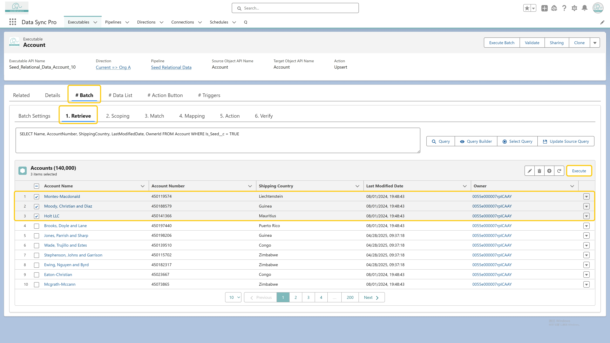

<p>
  In the <strong>Batch</strong> tab, under the <strong>Retrieve</strong> section, you can 
  select a small number of records from the previewed data list. Then, click 
  <strong>Execute</strong> to run the batch logic only for the selected records. This test 
  run also generates detailed execution logs to help with verification and troubleshooting 
  before processing the full dataset.
</p>

